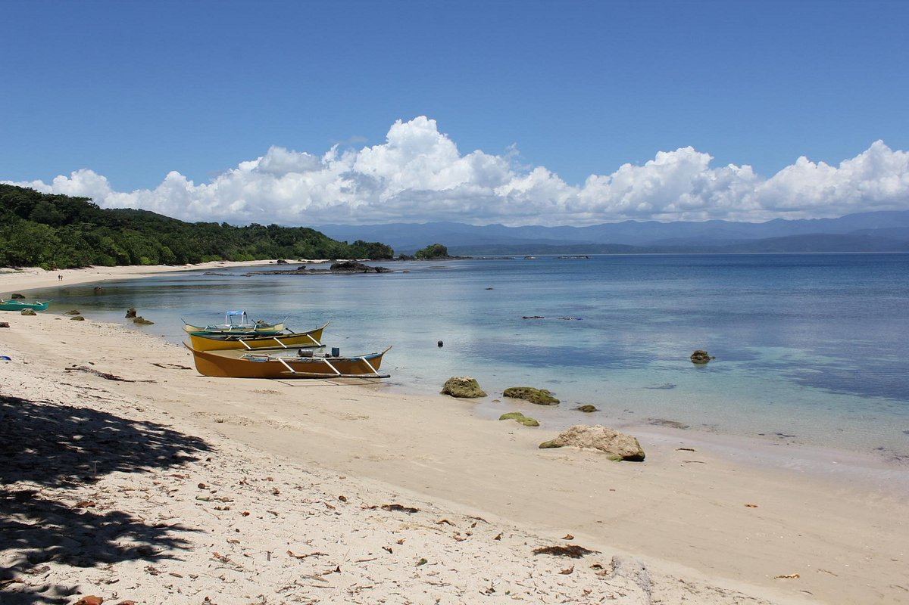
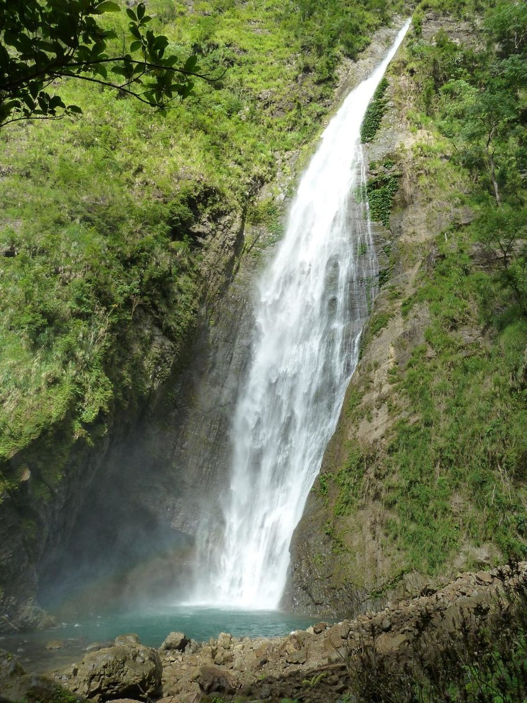

Isabela, officially the Province of Isabela, is the second largest province in the Philippines in land area located in the Cagayan Valley. Its capital and the largest local government unit is the city of Ilagan. It is bordered by the provinces of Cagayan to the north, Kalinga to the northwest, Mountain Province to the central-west, Ifugao and Nueva Vizcaya to the southwest, Quirino, Aurora and the independent city of Santiago to the south, and the Philippine Sea to the east.
This primarily agricultural province is the rice and corn granary of Luzon due to its plain and rolling terrain. In 2012, the province was declared as the country's top producer of corn with 1,209,524 metric tons. Isabela was also declared the second-largest rice producer in the Philippines and the Queen Province of the North.
Isabela is the 9th richest province in the Philippines as of 2021. The province has four trade centers in the cities of Ilagan, Cauayan, Santiago and the municipality of Roxas. Santiago City is considered to have the fastest-growing local economy in the entire Philippines. (Wikipedia)
Dicotcotan Beach

Dicotcotan Beachside
Dicotcotan Beach has stunning shoreline comes in at number one. The unblemished sand extends is long and beautiful, smack blast amidst warm sun, with completely clear waters ideal for snorkeling. (OceanoTavern)
Our Lady of the Pillar Parish
 Our Lady of the Pillar Church, inside
Our Lady of the Pillar Church, inside
Our Lady of the Pillar Church in Cauayan City is a beautiful brick church in Isabela, a province that takes pride in being the site of some of the oldest churches in the Philippines. (Philippine Faith and Heritage Tours)
Dibulo Falls

A view of Dibulo Falls
It is the tallest waterfalls in the Province of Isabela located in the little town of Dinapigue. It is located on the east coast side of the province facing the Pacific Ocean. Being separated by the mountain ranges of the Sierra Madre from the rest of the province. (PH Travel Destinations)